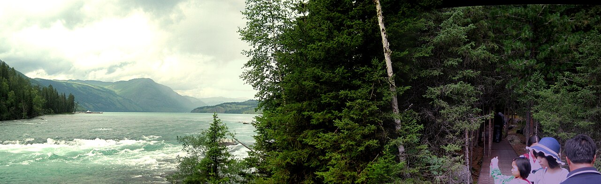
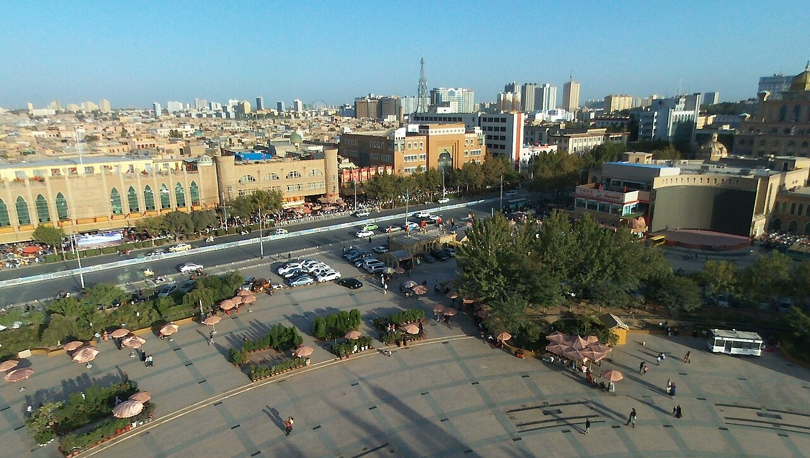
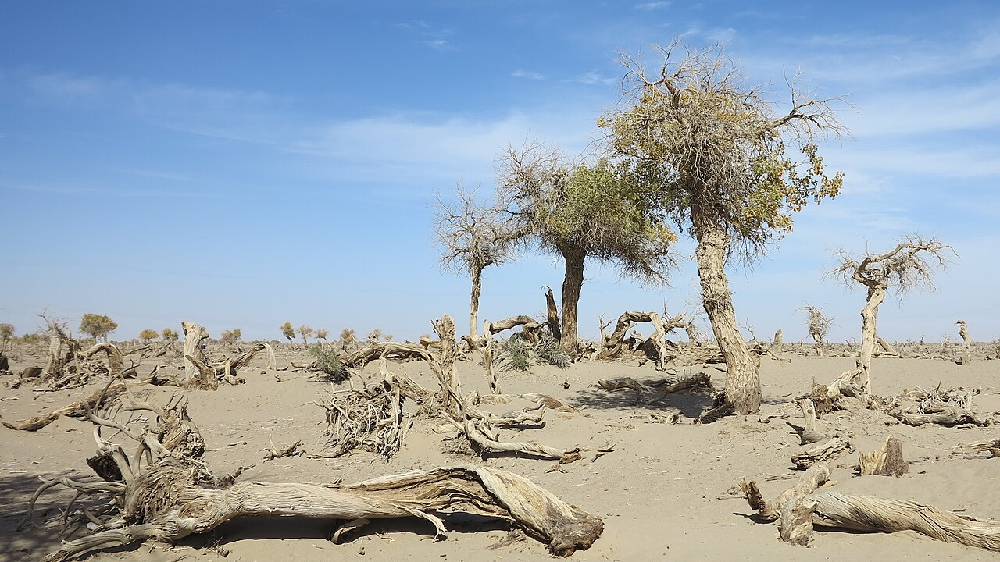
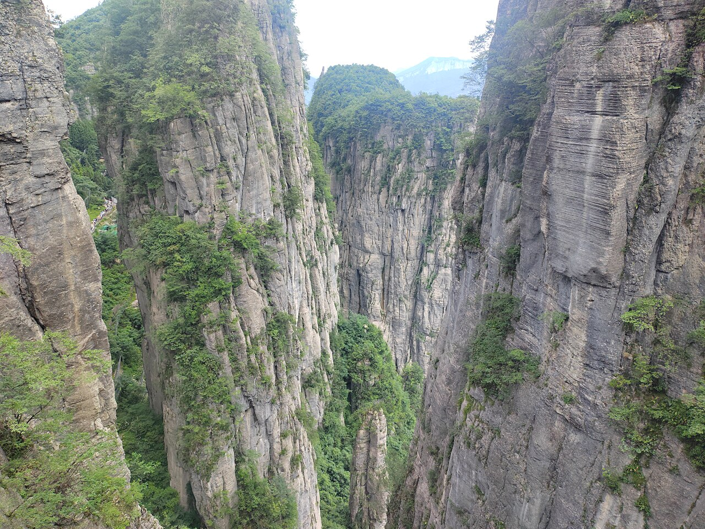

路线地图
国内主要自驾路线
按区域浏览，点击标签筛选。开腾势 N7 出发前，记得提前规划充电站点。
西南 · 国道 G318
川藏线
成都至拉萨，中国最经典的进藏公路。雪山、草原、冰川与藏式村镇在 G318 上依次展开。

西南 · 四川
川西环线
不进藏也能看尽川西精华：四姑娘山、丹巴藏寨、新都桥、稻城亚丁。

西南 · 国道 G214
滇藏线
云南大理/香格里拉入藏，梅里雪山与盐井古盐田沿途相伴。

西南 · 极限越野
丙察察
丙中洛至察隅，中国最险峻的进藏短线之一，原始到令人屏息。

西北 · 青海甘肃
青甘大环线
西宁起止的经典环线：湖、盐、沙漠、丹霞、石窟，西北精华一次看尽。

西北 · 新疆
北疆环线
乌鲁木齐—喀纳斯—禾木—赛里木湖，北疆秋色与湖泊森林的极致组合。

西北 · 新疆
南疆环线
喀什—塔县—盘龙古道，帕米尔高原与丝路南道的异域风情。

西北 · 新疆 · G217
独库公路
纵贯天山的景观大道，一日穿越四季，中国公路旅行天花板之一。

西北 · 丝路
丝绸之路
西安至敦煌，沿古丝路西行，历史与荒漠风光并存。

西北 · 国道 G109
青藏线
西宁至拉萨，路况最好的进藏公路，适合首次高原自驾。

西北 · 国道 G219
新藏线
叶城至狮泉河，穿越昆仑山与羌塘无人区，中国海拔最高的公路之一。

华北 · 河北
草原天路
张北草原天路，北京周边最热门的短途自驾，风车与草原同框。

华北 · 内蒙古
额济纳胡杨林
内蒙古额济纳旗，中国最美胡杨林之一，一年仅约 20 天黄金期。

东北 · 内蒙古
呼伦贝尔大草原
海拉尔—额尔古纳—满洲里，中国最美草原之一，夏季绿草如茵。

东北 · 边境
东北边境线
丹东—长白山—延吉—珲春，鸭绿江与天池构成的东北边境走廊。

华东 · 安徽
皖南川藏线
宁国至泾县，江南版川藏线，竹海、梯田与古村落。

华东 · 浙江
千岛湖环湖
杭州周边最成熟的环湖自驾，碧水千岛，适合休闲慢游。

华南 · 海南
海南环岛
椰风海韵的环岛之旅，冬季避寒自驾首选。
华南 · 广西
桂林山水线
桂林—阳朔—龙脊，中国山水美学的代表线路。

华中 · 湖南
张家界—凤凰古城
奇峰怪石与沱江夜景，湘西最经典的自然+人文组合。

华中 · 湖北
恩施大峡谷
湖北恩施，地缝、绝壁与浮桥，被称为「中国仙本那」。

华中 · 贵州
黔东南苗寨线
贵阳—凯里—西江—荔波，苗寨灯火与喀斯特山水。